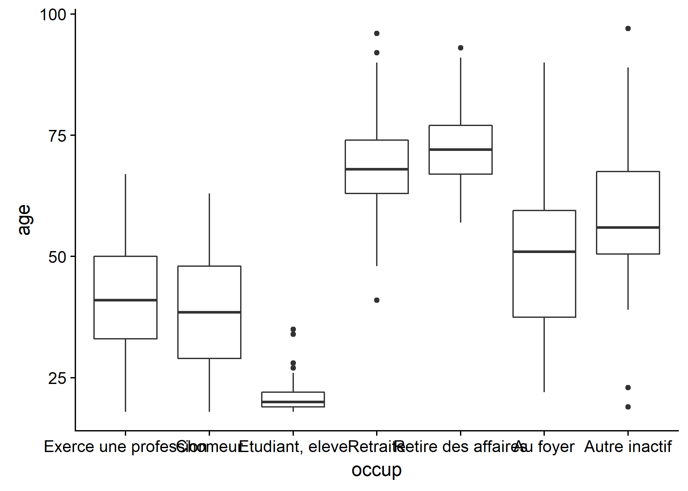
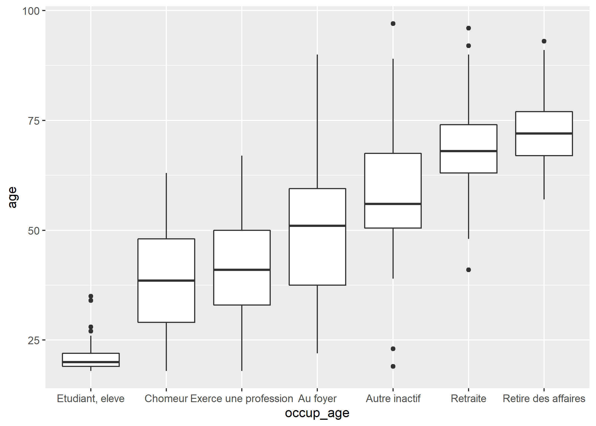

Recodage de variables
La version originale de ce chapitre a été écrite par Julien Barnier dans le cadre du support de cours Introduction à R.
Le recodage de variables est une opération extrêmement fréquente lors du traitement d’enquête. Celui-ci utilise soit l’une des formes d’indexation décrites précédemment, soit des fonctions ad hoc de R.
On passe ici en revue différents types de recodage parmi les plus courants. Les exemples s’appuient, comme précédemment, sur l’extrait de l’enquête Histoire de vie :
Renommer des variables
Une opération courante lorsqu’on a importé des variables depuis une source de données externe consiste à renommer les variables importées. Sous R les noms de variables doivent être à la fois courts et explicites.
Les noms de variables peuvent contenir des lettres, des chiffres (mais ils ne peuvent pas commencer par un chiffre), les symboles . et _ et doivent commencer par une lettre. R fait la différence entre les majuscules et les minuscules, ce qui signifie que x et X sont deux noms de variable différents. On évitera également d’utiliser des caractères accentués dans les noms de variable. Comme les espaces ne sont pas autorisés, on pourra les remplacer par un point ou un tiret bas.
On peut lister les noms des variables d’un tableau de données (data.frame) à l’aide de la fonction names :
[1] "id" "age" "sexe"
[4] "nivetud" "poids" "occup"
[7] "qualif" "freres.soeurs" "clso"
[10] "relig" "trav.imp" "trav.satisf"
[13] "hard.rock" "lecture.bd" "peche.chasse"
[16] "cuisine" "bricol" "cinema"
[19] "sport" "heures.tv" Cette fonction peut également être utilisée pour renommer l’ensemble des variables. Si par exemple on souhaitait passer les noms de toutes les variables en majuscules, on pourrait faire :
d.maj <- d
names(d.maj) <- c("ID", "AGE", "SEXE", "NIVETUD", "POIDS", "OCCUP",
"QUALIF", "FRERES.SOEURS", "CLSO", "RELIG", "TRAV.IMP", "TRAV.SATISF",
"HARD.ROCK", "LECTURE.BD", "PECHE.CHASSE", "CUISINE", "BRICOL",
"CINEMA", "SPORT", "HEURES.TV")
summary(d.maj$SEXE)Homme Femme
899 1101 Ce type de renommage peut être utile lorsqu’on souhaite passer en revue tous les noms de variables d’un fichier importé pour les corriger le cas échéant. Pour faciliter un peu ce travail pas forcément passionnant, on peut utiliser la fonction dput :
c("id", "age", "sexe", "nivetud", "poids", "occup", "qualif",
"freres.soeurs", "clso", "relig", "trav.imp", "trav.satisf",
"hard.rock", "lecture.bd", "peche.chasse", "cuisine", "bricol",
"cinema", "sport", "heures.tv")On obtient en résultat la liste des variables sous forme de vecteur déclaré. On n’a plus alors qu’à copier/coller cette chaîne, rajouter names(d) <- devant et modifier un à un les noms des variables.
Si on souhaite seulement modifier le nom d’une variable, on peut utiliser la fonction rename.variable de l’extension questionr. Celle-ci prend en argument le tableau de données, le nom actuel de la variable et le nouveau nom. Par exemple, si on veut renommer la variable bricol du tableau de données d en bricolage :
Non Oui
1147 853 Convertir une variable
Il peut arriver qu’on veuille transformer une variable d’un type dans un autre.
Variable numérique ou textuelle en facteur
Par exemple, on peut considérer que la variable numérique freres.soeurs est une « fausse » variable numérique et qu’une représentation sous forme de facteur serait plus adéquate. Dans ce cas il suffit de faire appel à la fonction factor :
[1] "0" "1" "2" "3" "4" "5" "6" "7" "8" "9" "10"
[12] "11" "12" "13" "14" "15" "16" "18" "22"La conversion d’une variable caractères en facteur se fait de la même manière.
La conversion d’un facteur ou d’une variable numérique en variable caractères peut se faire à l’aide de la fonction as.character :
Conversion d’un facteur
La conversion d’un facteur en caractères est fréquemment utilisé lors des recodages du fait qu’il est impossible d’ajouter de nouvelles modalités à un facteur de cette manière. Par exemple, la première des commandes suivantes génère un message d’avertissement, tandis que les deux autres fonctionnent :
Warning in `[<-.factor`(`*tmp*`, d.temp$qualif == "Ouvrier
specialise", : invalid factor level, NA generatedd$qualif.char <- as.character(d$qualif)
d$qualif.char[d$qualif.char == "Ouvrier specialise"] <- "Ouvrier"Dans le premier cas, le message d’avertissement indique que toutes les modalités « Ouvrier specialise » de notre variable qualif ont été remplacées par des valeurs manquantes NA.
Enfin, une variable de type caractères dont les valeurs seraient des nombres peut être convertie en variable numérique avec la fonction as.numeric.
[1] "1" "3.1415" "4" "5.6" "1" "4" [1] 1.0000 3.1415 4.0000 5.6000 1.0000 4.0000Lorsque l’on convertit un facteur avec as.numeric, on obtient le numéro de chaque facteur (première modalité, seconde modalité, etc.). Si la valeur numérique qui nous intéresse est en fait contenu dans le nom des modalités, il faut convertir au préalable notre facteur en variable textuelle.
[1] 1 3.1415 4 5.6 1 4
Levels: 1 3.1415 4 5.6[1] 1 2 3 4 1 3[1] 1.0000 3.1415 4.0000 5.6000 1.0000 4.0000ATTENTION : la valeur numérique associée à chaque étiquette d’un facteur change lorsque l’on modifie l’ordre des étiquettes d’un facteur. Dès lors, il est fortement déconseillé de convertir un facteur en variable numérique.
Conversion d’un vecteur labellisé
Nous avons abordé dans un chapitre précédent la gestion de données labellisées à l’aide de l’extension labelled. Les vecteurs labellisés sont beaucoup plus souples que les facteurs lors de la préparation des données, puisque la liste des modalités autorisées n’est pas fixée à l’avance. De plus, cela permet également de documenter au-fur-et-à-mesure les nouvelles variables que l’on créé.
Nous verrons dans les chapitres d’analyse, notamment quand il s’agit de calculer des modèles, qu’il est nécessaire de coder les variables catégorielles sous forme de facteurs. Il est très facile de convertir ubn vecteur labellisé en facteur à l’aide la fonction to_factor de l’extension labelled1.
library(labelled)
v <- labelled(c(1, 2, 9, 3, 3, 2, NA), c(oui = 1, `peut-être` = 2,
non = 3, `ne sait pas` = 9))
v<Labelled double>
[1] 1 2 9 3 3 2 NA
Labels:
value label
1 oui
2 peut-être
3 non
9 ne sait pas[1] oui peut-être ne sait pas non
[5] non peut-être <NA>
Levels: oui peut-être non ne sait pasIl possible d’indiquer si l’on souhaite, comme étiquettes du facteur, utiliser les étiquettes de valeur (par défaut), les valeurs elles-mêmes, ou bien les étiquettes de valeurs préfixées par la valeur d’origine indiquée entre crochets.
[1] oui peut-être ne sait pas non
[5] non peut-être <NA>
Levels: oui peut-être non ne sait pas[1] 1 2 9 3 3 2 <NA>
Levels: 1 2 3 9[1] [1] oui [2] peut-être [9] ne sait pas
[4] [3] non [3] non [2] peut-être
[7] <NA>
4 Levels: [1] oui [2] peut-être ... [9] ne sait pasPar défaut, les étiquettes du facteur seront triés selon l’ordre des étiquettes de valeur. Mais cela peut être modifié avec l’argument sort_levels si l’on préfère trier selon les valeurs ou selon l’ordre alphabétique des étiquettes.
[1] oui peut-être ne sait pas non
[5] non peut-être <NA>
Levels: oui peut-être non ne sait pas[1] oui peut-être ne sait pas non
[5] non peut-être <NA>
Levels: ne sait pas non oui peut-êtreD’autres options sont disponibles. On se réferra à la documentation complète de la fonction.
Découper une variable numérique en classes
Le premier type de recodage consiste à découper une variable de type numérique en un certain nombre de classes. On utilise pour cela la fonction cut.
Celle-ci prend, outre la variable à découper, un certain nombre d’arguments :
breaksindique soit le nombre de classes souhaité, soit, si on lui fournit un vecteur, les limites des classes ;labelspermet de modifier les noms de modalités attribués aux classes ;include.lowestetrightinfluent sur la manière dont les valeurs situées à la frontière des classes seront inclues ou exclues ;dig.labindique le nombre de chiffres après la virgule à conserver dans les noms de modalités.
Prenons tout de suite un exemple et tentons de découper notre variable age en cinq classes et de placer le résultat dans une nouvelle variable nommée age5cl :
(17.9,33.8] (33.8,49.6] (49.6,65.4] (65.4,81.2] (81.2,97.1]
454 628 556 319 43 Par défaut R nous a bien créé cinq classes d’amplitudes égales. La première classe va de 16,9 à 32,2 ans (en fait de 17 à 32), etc.
Les frontières de classe seraient plus présentables si elles utilisaient des nombres ronds. On va donc spécifier manuellement le découpage souhaité, par tranches de 20 ans :
(0,20] (20,40] (40,60] (60,80] (80,100]
72 660 780 436 52 On aurait pu tenir compte des âges extrêmes pour la première et la dernière valeur :
[1] 18 97
(18,20] (20,40] (40,60] (60,80] (80,97]
55 660 780 436 52 Les symboles dans les noms attribués aux classes ont leur importance : ( signifie que la frontière de la classe est exclue, tandis que [ signifie qu’elle est incluse. Ainsi, (20,40] signifie « strictement supérieur à 20 et inférieur ou égal à 40 ».
On remarque que du coup, dans notre exemple précédent, la valeur minimale, 18, est exclue de notre première classe, et qu’une observation est donc absente de ce découpage. Pour résoudre ce problème on peut soit faire commencer la première classe à 17, soit utiliser l’option include.lowest=TRUE :
(17,20] (20,40] (40,60] (60,80] (80,97]
72 660 780 436 52
[18,20] (20,40] (40,60] (60,80] (80,97]
72 660 780 436 52 On peut également modifier le sens des intervalles avec l’option right=FALSE, et indiquer manuellement les noms des modalités avec labels :
d$age20 <- cut(d$age, c(18, 20, 40, 60, 80, 97), right = FALSE,
include.lowest = TRUE)
table(d$age20)
[18,20) [20,40) [40,60) [60,80) [80,97]
48 643 793 454 62 d$age20 <- cut(d$age, c(18, 20, 40, 60, 80, 97), include.lowest = TRUE,
labels = c("<20ans", "21-40 ans", "41-60ans", "61-80ans",
">80ans"))
table(d$age20)
<20ans 21-40 ans 41-60ans 61-80ans >80ans
72 660 780 436 52 L’extension questionr propose une interface interactive à la fonction cut, nommée icut. Elle s’utilise de la manière suivante :
RStudio devrait ouvrir une fenêtre semblable à l’image ci-dessous.

Capture d’écran d’icut
Vous pouvez alors indiquer les limites de vos classes ainsi que quelques options complémentaires. Ces limites sont représentées graphiquement sur l’histogramme de la variable d’origine.
L’onglet Vérification affiche un tri à plat et un graphique en barres de la nouvelle variable. Une fois le résultat satisfaisant, vous pouvez récupérer le code généré pour l’inclure dans votre script.
L’extension questionr propose aussi une fonction quant.cut permettant de découper une variable numérique en un nombre de classes donné ayant des efffectifs semblables. Il suffit de lui passer le nombre de classes en argument :
[18,30) [30,39) [39,48) [48,55.667) [55.667,66)
302 337 350 344 305
[66,97]
362 quant.cut admet les mêmes autres options que cut (include.lowest, right, labels… ).
Regrouper les modalités d’une variable
Pour regrouper les modalités d’une variable qualitative (d’un facteur le plus souvent), on peut utiliser directement l’indexation.
Ainsi, si on veut recoder la variable qualif dans une variable qualif.reg plus « compacte », on peut utiliser :
Ouvrier specialise Ouvrier qualifie
203 292
Technicien Profession intermediaire
86 160
Cadre Employe
260 594
Autre
58 d$qualif.reg[d$qualif == "Ouvrier specialise"] <- "Ouvrier"
d$qualif.reg[d$qualif == "Ouvrier qualifie"] <- "Ouvrier"
d$qualif.reg[d$qualif == "Employe"] <- "Employe"
d$qualif.reg[d$qualif == "Profession intermediaire"] <- "Intermediaire"
d$qualif.reg[d$qualif == "Technicien"] <- "Intermediaire"
d$qualif.reg[d$qualif == "Cadre"] <- "Cadre"
d$qualif.reg[d$qualif == "Autre"] <- "Autre"
table(d$qualif.reg)
Autre Cadre Employe Intermediaire
58 260 594 246
Ouvrier
495 On aurait pu représenter ce recodage de manière plus compacte, notamment en commençant par copier le contenu de qualif dans qualif.reg, ce qui permet de ne pas s’occuper de ce qui ne change pas.
Il est cependant nécessaire de ne pas copier qualif sous forme de facteur, sinon on ne pourrait ajouter de nouvelles modalités. On copie donc la version caractères de qualif grâce à la fonction as.character :
d$qualif.reg <- as.character(d$qualif)
d$qualif.reg[d$qualif == "Ouvrier specialise"] <- "Ouvrier"
d$qualif.reg[d$qualif == "Ouvrier qualifie"] <- "Ouvrier"
d$qualif.reg[d$qualif == "Profession intermediaire"] <- "Intermediaire"
d$qualif.reg[d$qualif == "Technicien"] <- "Intermediaire"
table(d$qualif.reg)
Autre Cadre Employe Intermediaire
58 260 594 246
Ouvrier
495 On peut faire une version encore plus compacte en utilisant l’opérateur logique ou (|) :
d$qualif.reg <- as.character(d$qualif)
d$qualif.reg[d$qualif == "Ouvrier specialise" | d$qualif == "Ouvrier qualifie"] <- "Ouvrier"
d$qualif.reg[d$qualif == "Profession intermediaire" | d$qualif ==
"Technicien"] <- "Intermediaire"
table(d$qualif.reg)
Autre Cadre Employe Intermediaire
58 260 594 246
Ouvrier
495 Enfin, pour terminer ce petit tour d’horizon, on peut également remplacer l’opérateur | par %in%, qui peut parfois être plus lisible :
d$qualif.reg <- as.character(d$qualif)
d$qualif.reg[d$qualif %in% c("Ouvrier specialise", "Ouvrier qualifie")] <- "Ouvrier"
d$qualif.reg[d$qualif %in% c("Profession intermediaire", "Technicien")] <- "Intermediaire"
table(d$qualif.reg)
Autre Cadre Employe Intermediaire
58 260 594 246
Ouvrier
495 Dans tous les cas le résultat obtenu est une variable de type caractère. On pourra la convertir en facteur par un simple :
Si on souhaite recoder les valeurs manquantes, il suffit de faire appel à la fonction is.na :
Satisfaction Insatisfaction Equilibre
480 117 451 d$trav.satisf.reg <- as.character(d$trav.satisf)
d$trav.satisf.reg[is.na(d$trav.satisf)] <- "Manquant"
table(d$trav.satisf.reg)
Equilibre Insatisfaction Manquant Satisfaction
451 117 952 480 questionr propose une interface interactive pour le recodage d’une variable qualitative (renommage et regroupement de modalités). Cette fonction, nommée irec, s’utilise de la manière suivante :
RStudio va alors ouvrir une fenêtre semblable à l’image ci-dessous :
Capture de irec
Vous pouvez alors sélectionner différentes options, et pour chaque ancienne modalité, indiquer la nouvelle valeur correspondante. Pour regrouper des modalités, il suffit de leur assigner des nouvelles valeurs identiques. Dans tous les cas n’hésitez pas à expérimenter, l’interface se contente de générer du code R à copier/coller dans votre script mais ne l’exécute pas, et ne modifie donc jamais vos données !
L’onglet Vérification affiche un tri croisé de l’ancienne et de la nouvelle variable pour vérifier que le recodage est correct. Une fois le résultat satisfaisant, vous pouvez récupérer le code généré dans l’onglet Code pour l’inclure dans votre script.
Les exemples précédents montrent bien qu’il est parfois malaisé d’utiliser des facteurs lorsque l’on recode des variables. Les vecteurs labellisés sont, quant à eux, plus souples. Attention : avec des vecteurs labellisés, on utilisera les valeurs sous-jacentes et non les étiquettes pour écrire des conditions.
[2000 obs.] Niveau d'éducation
labelled double: 0 0 0 0 1 0 0 0 0 0 ...
min: 0 - max: 3 - NAs: 0 (0%) - 4 unique values
4 value labels: [0] aucun [1] primaire [2] secondaire [3] supérieur
n %
[0] aucun 1138 56.9
[1] primaire 460 23.0
[2] secondaire 348 17.4
[3] supérieur 54 2.7
Total 2000 100.0femmes$educ2 <- 0
femmes$educ2[femmes$educ >= 2] <- 1
var_label(femmes$educ2) <- "A atteint un niveau secondaire ou supérieur ?"
val_labels(femmes$educ2) <- c(non = 0, oui = 1)
describe(femmes$educ2)[2000 obs.] A atteint un niveau secondaire ou supérieur ?
labelled double: 0 0 0 0 0 0 0 0 0 0 ...
min: 0 - max: 1 - NAs: 0 (0%) - 2 unique values
2 value labels: [0] non [1] oui
n %
[0] non 1598 79.9
[1] oui 402 20.1
Total 2000 100.0Variables calculées
La création d’une variable numérique à partir de calculs sur une ou plusieurs autres variables numériques se fait très simplement.
Supposons que l’on souhaite calculer une variable indiquant l’écart entre le nombre d’heures passées à regarder la télévision et la moyenne globale de cette variable. On pourrait alors faire :
[1] 0 12[1] 2.246566d$ecart.heures.tv <- d$heures.tv - mean(d$heures.tv, na.rm = TRUE)
range(d$ecart.heures.tv, na.rm = TRUE)[1] -2.246566 9.753434[1] 4.714578e-17Autre exemple tiré du jeu de données rp99 : si on souhaite calculer le pourcentage d’actifs dans chaque commune, on peut diviser la population active pop.act par la population totale pop.tot.
Combiner plusieurs variables
La combinaison de plusieurs variables se fait à l’aide des techniques d’indexation déjà décrites précédemment. Le plus compliqué est d’arriver à formuler des conditions parfois complexes de manière rigoureuse.
On peut ainsi vouloir combiner plusieurs variables qualitatives en une seule :
d$act.manuelles <- NA
d$act.manuelles[d$cuisine == "Oui" & d$bricol == "Oui"] <- "Cuisine et Bricolage"
d$act.manuelles[d$cuisine == "Oui" & d$bricol == "Non"] <- "Cuisine seulement"
d$act.manuelles[d$cuisine == "Non" & d$bricol == "Oui"] <- "Bricolage seulement"
d$act.manuelles[d$cuisine == "Non" & d$bricol == "Non"] <- "Ni cuisine ni bricolage"
table(d$act.manuelles)
Bricolage seulement Cuisine et Bricolage
437 416
Cuisine seulement Ni cuisine ni bricolage
465 682 On peut également combiner variables qualitatives et variables quantitatives :
d$age.sexe <- NA
d$age.sexe[d$sexe == "Homme" & d$age < 40] <- "Homme moins de 40 ans"
d$age.sexe[d$sexe == "Homme" & d$age >= 40] <- "Homme plus de 40 ans"
d$age.sexe[d$sexe == "Femme" & d$age < 40] <- "Femme moins de 40 ans"
d$age.sexe[d$sexe == "Femme" & d$age >= 40] <- "Femme plus de 40 ans"
table(d$age.sexe)
Femme moins de 40 ans Femme plus de 40 ans
376 725
Homme moins de 40 ans Homme plus de 40 ans
315 584 Les combinaisons de variables un peu complexes nécessitent parfois un petit travail de réflexion. En particulier, l’ordre des commandes de recodage a parfois une influence dans le résultat final.
Pour combiner rapidement plusieurs variables entre elles, on peut aussi avoir recours à la fonction interaction qui créra un facteur avec un niveau pour chaque combinaison de modalités des variables sources.
Homme.<20ans Femme.<20ans Homme.21-40 ans
34 38 291
Femme.21-40 ans Homme.41-60ans Femme.41-60ans
369 352 428
Homme.61-80ans Femme.61-80ans Homme.>80ans
205 231 17
Femme.>80ans
35 Variables scores
Une variable score est une variable calculée en additionnant des poids accordés aux modalités d’une série de variables qualitatives.
Pour prendre un exemple tout à fait arbitraire, imaginons que nous souhaitons calculer un score d’activités extérieures. Dans ce score on considère que le fait d’aller au cinéma « pèse » 10, celui de pêcher ou chasser vaut 30 et celui de faire du sport vaut 20. On pourrait alors calculer notre score de la manière suivante :
d$score.ext <- 0
d$score.ext[d$cinema == "Oui"] <- d$score.ext[d$cinema == "Oui"] +
10
d$score.ext[d$peche.chasse == "Oui"] <- d$score.ext[d$peche.chasse ==
"Oui"] + 30
d$score.ext[d$sport == "Oui"] <- d$score.ext[d$sport == "Oui"] +
20
table(d$score.ext)
0 10 20 30 40 50 60
800 342 229 509 31 41 48 Cette notation étant un peu lourde, on peut l’alléger un peu en utilisant la fonction ifelse. Celle-ci prend en argument une condition et deux valeurs. Si la condition est vraie elle retourne la première valeur, sinon elle retourne la seconde.
d$score.ext <- 0
d$score.ext <- ifelse(d$cinema == "Oui", 10, 0) + ifelse(d$peche.chasse ==
"Oui", 30, 0) + ifelse(d$sport == "Oui", 20, 0)
table(d$score.ext)
0 10 20 30 40 50 60
800 342 229 509 31 41 48 Vérification des recodages
Il est très important de vérifier, notamment après les recodages les plus complexes, qu’on a bien obtenu le résultat escompté. Les deux points les plus sensibles étant les valeurs manquantes et les erreurs dans les conditions.
Pour vérifier tout cela, le plus simple est sans doute de faire des tableaux croisés entre la variable recodée et celles ayant servi au recodage, à l’aide des fonctions table ou xtabs, et de vérifier le nombre de valeurs manquantes dans la variable recodée avec summary, freq ou table.
Par exemple :
d$act.manuelles <- NA
d$act.manuelles[d$cuisine == "Oui" & d$bricol == "Oui"] <- "Cuisine et Bricolage"
d$act.manuelles[d$cuisine == "Oui" & d$bricol == "Non"] <- "Cuisine seulement"
d$act.manuelles[d$cuisine == "Non" & d$bricol == "Oui"] <- "Bricolage seulement"
d$act.manuelles[d$cuisine == "Non" & d$bricol == "Non"] <- "Ni cuisine ni bricolage"
table(d$act.manuelles, d$cuisine)
Non Oui
Bricolage seulement 437 0
Cuisine et Bricolage 0 416
Cuisine seulement 0 465
Ni cuisine ni bricolage 682 0
Non Oui
Bricolage seulement 0 437
Cuisine et Bricolage 0 416
Cuisine seulement 465 0
Ni cuisine ni bricolage 682 0Facteurs et forcats
forcats est une extension facilitant la manipulation des variables qualitatives, qu’elles soient sous forme de vecteurs character ou de facteurs. Elle fait partie du tidyverse, et est donc automatiquement chargée par :
Modifier les modalités d’une variable qualitative
Une opération courante consiste à modifier les valeurs d’une variable qualitative, que ce soit pour avoir des intitulés plus courts ou plus clairs ou pour regrouper des modalités entre elles.
Il existe plusieurs possibilités pour effectuer ce type de recodage, mais ici on va utiliser la fonction fct_recode de l’extension forcats. Celle-ci prend en argument une liste de recodages sous la forme "Nouvelle valeur" = "Ancienne valeur".
Un exemple :
f <- c("Pomme", "Poire", "Pomme", "Cerise")
f <- fct_recode(f, Fraise = "Pomme", Ananas = "Poire")
f[1] Fraise Ananas Fraise Cerise
Levels: Cerise Ananas FraiseAutre exemple sur une “vraie” variable :
hdv2003$qualif5 <- fct_recode(hdv2003$qualif, Ouvrier = "Ouvrier specialise",
Ouvrier = "Ouvrier qualifie", Interm = "Technicien", Interm = "Profession intermediaire")
freq(hdv2003$qualif5)Attention, les anciennes valeurs saisies doivent être exactement égales aux valeurs des modalités de la variable recodée : toute différence d’accent ou d’espace fera que ce recodage ne sera pas pris en compte. Dans ce cas, forcats affiche un avertissement nous indiquant qu’une valeur saisie n’a pas été trouvée dans les modalités de la variable :
hdv2003$qualif_test <- fct_recode(hdv2003$qualif, Ouvrier = "Ouvrier spécialisé",
Ouvrier = "Ouvrier qualifié")Warning: Unknown levels in `f`: Ouvrier spécialisé, Ouvrier
qualifiéSi on souhaite recoder une modalité de la variable en NA, il faut (contre intuitivement) lui assigner la valeur NULL :
À l’inverse, si on souhaite recoder les NA d’une variable, on utilisera la fonction fct_explicit_na, qui convertit toutes les valeurs manquantes (NA) d’un facteur en une modalité spécifique :
hdv2003$qualif_rec <- fct_explicit_na(hdv2003$qualif, na_level = "(Manquant)")
freq(hdv2003$qualif_rec)D’autres fonctions sont proposées par forcats pour faciliter certains recodage, comme fct_collapse, qui propose une autre syntaxe pratique quand on doit regrouper ensemble des modalités :
hdv2003$qualif_rec <- fct_collapse(hdv2003$qualif, Ouvrier = c("Ouvrier specialise",
"Ouvrier qualifie"), Interm = c("Technicien", "Profession intermediaire"))
freq(hdv2003$qualif_rec)fct_other, qui regroupe une liste de modalités en une seule modalité “Other” :
hdv2003$qualif_rec <- fct_other(hdv2003$qualif, drop = c("Ouvrier specialise",
"Ouvrier qualifie", "Cadre", "Autre"))
freq(hdv2003$qualif_rec)fct_lump, qui regroupe automatiquement les modalités les moins fréquentes en une seule modalité “Other” (avec possibilité d’indiquer des seuils de regroupement) :
Ordonner les modalités d’une variable qualitative
L’avantage des facteurs (par rapport aux vecteurs de type character) est que leurs modalités peuvent être ordonnées, ce qui peut faciliter la lecture de tableaux ou graphiques.
On peut ordonner les modalités d’un facteur manuellement, par exemple avec la fonction fct_relevel() de l’extension forcats :
hdv2003$qualif_rec <- fct_relevel(hdv2003$qualif, "Cadre", "Profession intermediaire",
"Technicien", "Employe", "Ouvrier qualifie", "Ouvrier specialise",
"Autre")
freq(hdv2003$qualif_rec)Une autre possibilité est d’ordonner les modalités d’un facteur selon les valeurs d’une autre variable. Par exemple, si on représente le boxplot de la répartition de l’âge selon le statut d’occupation :

Le graphique pourrait être plus lisible si les modalités étaient triées par âge median croissant. Ceci est possible en utilisant fct_reorder. Celle-ci prend 3 arguments : le facteur à réordonner, la variable dont les valeurs doivent être utilisées pour ce réordonnancement, et enfin une fonction à appliquer à cette deuxième variable.
hdv2003$occup_age <- fct_reorder(hdv2003$occup, hdv2003$age,
median)
ggplot(hdv2003) + geom_boxplot(aes(x = occup_age, y = age))
Combiner plusieurs variables
Parfois, on veut créer une nouvelle variable en partant des valeurs d’une ou plusieurs autres variables. Dans ce cas on peut utiliser les fonctions if_else pour les cas les plus simples, ou case_when pour les cas plus complexes. Ces deux fonctions sont incluses dans l’extension dplyr, qu’il faut donc avoir chargé précédemment (voir le chapitre consacré à dplyr).
if_else
if_else prend trois arguments : un test, une valeur à renvoyer si le test est vrai, et une valeur à renvoyer si le test est faux.
Voici un exemple simple :
[1] "Supérieur à 10" "Supérieur à 10" "Inférieur à 10"
[4] "Supérieur à 10"La fonction devient plus intéressante avec des tests combinant plusieurs variables. Par exemple, imaginons qu’on souhaite créer une nouvelle variable indiquant les hommes de plus de 60 ans :
hdv2003$statut <- if_else(hdv2003$sexe == "Homme" & hdv2003$age >
60, "Homme de plus de 60 ans", "Autre")
freq(hdv2003$statut)case_when
case_when est une génération du if_else qui permet d’indiquer plusieurs tests et leurs valeurs associées.
Imaginons qu’on souhaite créer une nouvelle variable permettant d’identifier les hommes de plus de 60 ans, les femmes de plus de 60 ans, et les autres. On peut utiliser la syntaxe suivante :
hdv2003$statut <- case_when(hdv2003$age > 60 & hdv2003$sexe ==
"Homme" ~ "Homme de plus de 60 ans", hdv2003$age > 60 & hdv2003$sexe ==
"Femme" ~ "Femme de plus de 60 ans", TRUE ~ "Autre")
freq(hdv2003$statut)case_when prend en arguments une série d’instructions sous la forme condition ~ valeur. Il les exécute une par une, et dès qu’une condition est vraie, il renvoit la valeur associée.
La clause TRUE ~ "Autre" permet d’assigner une valeur à toutes les lignes pour lesquelles aucune des conditions précédentes n’est vraie.
Attention : comme les conditions sont testées l’une après l’autre et que la valeur renvoyée est celle correspondant à la première condition vraie, l’ordre de ces conditions est très important. Il faut absolument aller du plus spécifique au plus général.
Par exemple le recodage suivant ne fonctionne pas :
hdv2003$statut <- case_when(hdv2003$sexe == "Homme" ~ "Homme",
hdv2003$sexe == "Homme" & hdv2003$age > 60 ~ "Homme de plus de 60 ans",
TRUE ~ "Autre")
freq(hdv2003$statut)Comme la condition sexe == "Homme" est plus générale que sexe == "Homme" & age > 60, cette deuxième condition n’est jamais testée ! On n’obtiendra jamais la valeur correspondante.
Pour que ce recodage fonctionne il faut donc changer l’ordre des conditions pour aller du plus spécifique au plus général :
hdv2003$statut <- case_when(hdv2003$sexe == "Homme" & hdv2003$age >
60 ~ "Homme de plus de 60 ans", hdv2003$sexe == "Homme" ~
"Homme", TRUE ~ "Autre")
freq(hdv2003$statut)Vous pouvez trouver des exercices avec leur solution dans l’Introduction à R et au tidyverse de Julien Barnier.
Pour aller plus loin, R for Data Science de Garrett Grolemund et Hadley Wickham.
Recodage et data.table
Nous aborderons dans un prochain chapitre l’extension data.table qui étend les tableaux de données et modifie complètement la syntaxe utilisée entre les crochets. Elle nécessite un petit temps d’adaptation mais, une fois maîtrisée, elle facile le quotidien lorsqu’il s’agit de manipuler et recoder les données. Ci-dessous, un petit avant-goût, reprenons quelques exemples précédents.
library(data.table)
dt <- data.table(hdv2003)
dt[, score.ext := 0]
dt[cinema == "Oui", score.ext := score.ext + 10]
dt[peche.chasse == "Oui", score.ext := score.ext + 30]
dt[sport == "Oui", score.ext := score.ext + 20]
table(dt$score.ext)
0 10 20 30 40 50 60
800 342 229 509 31 41 48 dt[cuisine == "Oui" & bricol == "Oui", act.manuelles := "Cuisine et Bricolage"]
dt[cuisine == "Oui" & bricol == "Non", act.manuelles := "Cuisine seulement"]
dt[cuisine == "Non" & bricol == "Oui", act.manuelles := "Bricolage seulement"]
dt[cuisine == "Non" & bricol == "Non", act.manuelles := "Ni cuisine ni bricolage"]
table(dt$act.manuelles)
Bricolage seulement Cuisine et Bricolage
437 416
Cuisine seulement Ni cuisine ni bricolage
465 682 On priviligiera la fonction
to_factorà la fonctionas_factorde l’extensionhaven, la première ayant plus de possibilités et un comportement plus consistent.↩